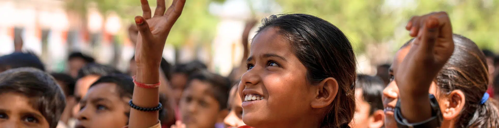

Building a future where every learner has access to quality education and opportunities to grow.
Millions of children in India still grow up without the chance to go to school, explore their talents, or dream of a better future. At Bal Raksha Bharat, we believe that every child deserves quality education – from their first steps to their final years in school. For over 15 years, we have helped over 2 million children learn, thrive, and stay safe. With your support, we can help thousands more build brighter futures through education. Bal Raksha Bharat builds impactful early learning programs for children from birth to age 6, helping them get ready for school and thrive. We strengthen school education for ages 8 to 18 with a focus on literacy, numeracy, and better learning outcomes. Our work also goes beyond classrooms; we keep children safe in and around schools, support learning in emergencies, and create safe learning spaces. Guided by the National Education Policy 2020 and India’s vision, we work to give every child a fair chance to learn and succeed, making India a global leader in education and knowledge.
Over the years, we have developed innovative, sustainable, and scalable solutions aligned with Government of India policies, enabling us to continue ensuring access to quality education for underprivileged children. In the last 16 years (January, 2010 – March, 2025), we have reached out to more than 2 million children.
Here are our key pillars of building a solid foundation for children!
We provide scholarships, digital learning, and school support.
Medical camps, awareness programs, and wellness support.
Talentify aims to ensure “0” days loss in education for Children
Talentify has adopted an all-hazards approach to keep children safe in and around school from natural and everyday hazards, and violence. Bal Raksha Bharat envisions a safe, inclusive, and resilient learning environment for every child—from early years to adolescence. It addresses the full spectrum of risks that children face in and around schools by adopting a ‘whole school’ approach, engaging stakeholders across all levels of the socioecological model (children, caregivers, teachers, school management, communities, civil society, and government authorities) to make both immediate and lasting improvements for children’s safety and protection.
In a world facing climate crises, disasters, and growing inequalities, our Safe Schools and Anganwadi Centres approach integrates:
1. Education in Emergencies (EiE).
2. Peace Education (Schools as Zone of Peace)
3. Comprehensive School Safety (CSS)
>We focus on capacity building, risk assessments, and tech-enabled safety audits to ensure learning continuity during crises. Road safety education is embedded to empower children and communities with safe commuting practices. We also advocate for child-friendly policies and collaborate with governments to scale our impact, ensuring that every child has access to safe and supportive learning environments.
Join Talentify in building a brighter future through education.